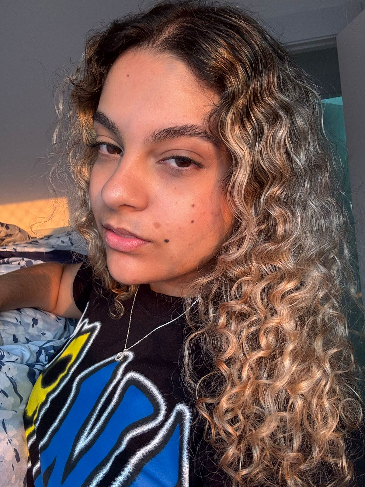

Desenvolvedora, Designer e Criadora de Conteúdo

Olá! Sou uma profissional apaixonada por tecnologia e inovação. Atualmente, estou cursando Análise e Desenvolvimento de Sistemas na Universidade de Vila Velha (UVV), onde aprofundo meus conhecimentos em desenvolvimento e arquitetura de sistemas. Tenho formação em Ensino Médio pelo Geraldo Costas Alves e aprofundei meus conhecimentos através do curso de Informática Avançada pela Cedaspy, onde desenvolvi habilidades técnicas sólidas.
Minha trajetória profissional inclui experiências em diferentes setores: atendi clientes como recepcionista odontológica na Oral Clínica, onde desenvolvi habilidades de comunicação e organização, e trabalhei na área financeira na Rede Autoriza, ampliando minha visão de negócios.
Atualmente, busco oportunidades na Autoglass, onde posso aplicar meus conhecimentos técnicos e experiência para contribuir significativamente para o crescimento da empresa.
Python com conhecimento em modelagem de dados e desenvolvimento de soluções.
Python ModelagemEspecialista em UI/UX Design com Figma, criando interfaces modernas e funcionais.
Figma UI/UX PrototipagemDesenvolvimento de sites responsivos e aplicações web interativas.
HTML/CSS JavaScriptExperiência em criação de jogos com diferentes engines e tecnologias.
Game DevDomínio completo do pacote Office e ferramentas de gestão de projetos.
Word Excel PowerPointProdução de documentos profissionais de alta qualidade e bem estruturados.
Documentação| Instituição | Curso/Nível | Período | Status |
|---|---|---|---|
| Geraldo Costas Alves | Ensino Médio | Concluído | ✓ Completo |
| Cedaspy | Informática Avançada | Concluído | ✓ Completo |
Adoro sair à noite, conhecer novos lugares e aproveitar momentos com amigos e família.
Viajar é uma paixão! Explorar novos destinos, culturas e experiências enriquece minha perspectiva.
Crochê é meu hobby criativo favorito. Combina relaxamento com criatividade e produção de peças únicas.
"Rather Lie" - Playboi Carti feat. The Weeknd é uma das minhas músicas preferidas.
Se você está procurando um profissional criativo e competente para seu próximo projeto, gostaria de conversar com você!
Entre em Contato